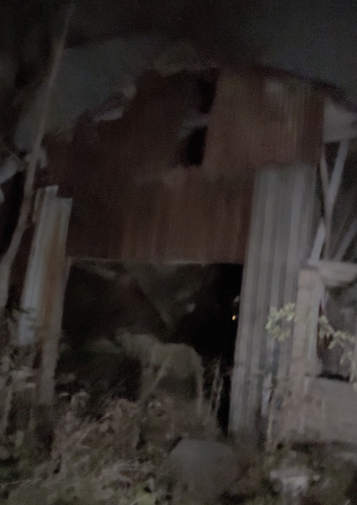

Explored Locations
Showing 3 places
Industrial Ruins
High Demolition Risk
Smokey Hollow Mill Site
Grindstone Creek, Waterdown
Remnants of the 19th-century flour and saw mill complex situated along the Grindstone Creek ravine floor.
Added 2024
View File →

Drain Tunnel
Flash Flood Hazard
Clappison Drain Culvert
Clappison's Corners Cut
Long stone and concrete drainage culvert running deep beneath Highway 6/5 intersection cut into the Niagara Escarpment.
Added 2024
View File →
Residential
Sealed / Boarded
Old Millburough Farmstead
North Waterdown / Flamborough
Late 1800s stone farmhouse and collapsed wooden silo abandoned during suburban expansion developments.
Added 2024
View File →
No matching locations found
Try tweaking your search term or filter settings.